배우기 전에 먼저 해 보세요. 틀려도 괜찮아요.
Alles, was ich weiß에서 was는 무엇을 가리키나요?
alles, etwas, nichts, das 뒤에는 was로 이어요.
Es ist zwar anstrengend, aber schön.은 무슨 뜻일까요?
zwar … aber는 '~이기는 하지만'이에요.
B1.2 Perspektiven · Lektion 4
사회 참여
음성은 준비 중이에요. 듣기 단추와 받아쓰기는 음성이 올라오면 쓸 수 있어요. 그동안은 글을 읽으면서 공부해요.
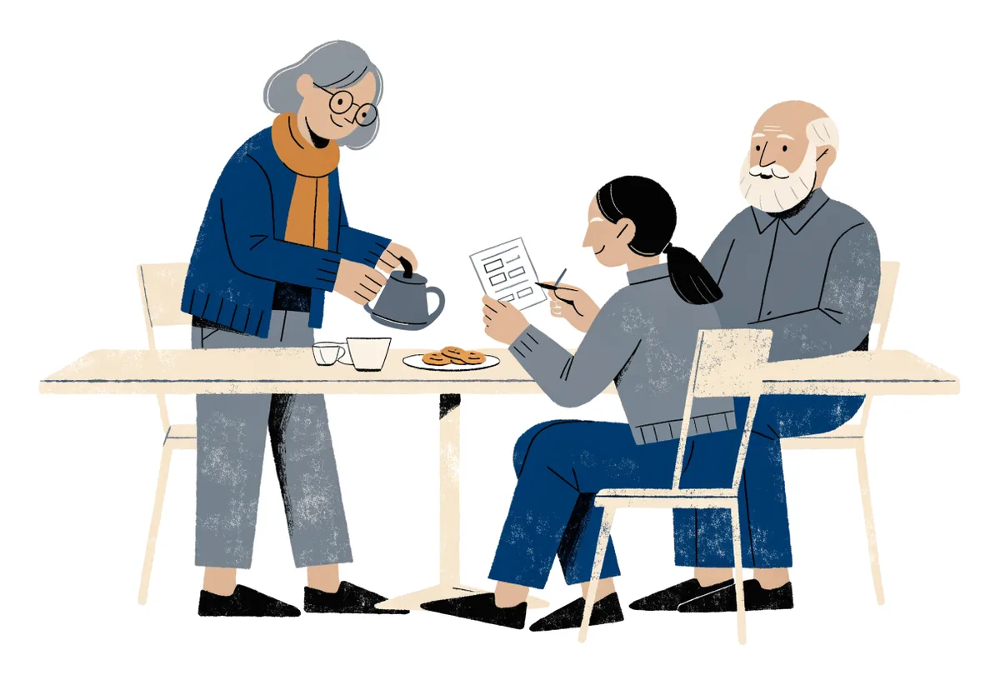
독일에서는 많은 사람이 돈을 받지 않고 남을 위해 일해요. 운동 모임에서, 소방대에서, 이웃을 돕는 자리에서요. 이런 활동을 소개하고 함께하자고 권하려면 '~하는 것', '~하는 곳'을 한 문장에 담을 수 있어야 해요. 이 과에서는 was와 wo로 잇는 문장, nicht nur … sondern auch, zwar … aber를 배워요.
문법 Relativsätze mit was und wo, nicht nur … sondern auch, zwar … aber
과제대학학생 단체 활동을 소개하고 회원 모집하기
과제직장회사의 사회 공헌 활동에 참여 신청하기
이 과를 마치면 봉사 경험을 이야기하고, 단체를 소개하고, 참여를 권할 수 있어요.
이 과에서 쓸 말이에요.
배우기 전에 먼저 해 보세요. 틀려도 괜찮아요.
Alles, was ich weiß에서 was는 무엇을 가리키나요?
alles, etwas, nichts, das 뒤에는 was로 이어요.
Es ist zwar anstrengend, aber schön.은 무슨 뜻일까요?
zwar … aber는 '~이기는 하지만'이에요.
Lektion 3의 낱말 다섯 개를 다시 떠올려 보세요.
2028년 6월, WG 발코니예요. Jiu가 대학에서 온 메일을 읽고 있어요. Lena는 한 달에 한 번 자연 보호 모임에 나가요.
들으면서 찾아보세요. Jiu는 왜 Buddy가 되려고 하나요?
6월, 회사 부엌이에요. Kessler Technik은 한 해에 하루, 모든 직원이 동네를 위해 일해요. 인사과의 Frau Schulz가 메일을 보냈어요.
들으면서 찾아보세요. 올해는 무슨 일을 하나요?
6월의 목요일 저녁, Frau Becker가 사는 집의 모임방이에요. Frau Becker는 여기서 목요일마다 Sprachcafé를 열어요. Sora는 몇 주 전부터 와요.
들으면서 찾아보세요. Sora는 무엇을 해 보겠다고 하나요?
세 대화를 듣고 답하세요.
Buddy는 무슨 일을 하나요?
Jiu hat keine Zeit für das Buddy-Programm.
시간은 별로 없지만 일주일에 두 시간은 낼 수 있다고 했어요.
Lena의 모임은 토요일에 무엇을 하나요?
회사는 올해 봉사의 날에 무엇을 하나요?
Die Mitarbeiter müssen Farbe und Werkzeug selbst kaufen.
회사가 사요.
Markus의 봉사 활동은 무엇인가요?
Sprachcafé에 필요한 것은 무슨 돈으로 사나요?
Sora möchte mit den Jugendlichen einen Fotokurs machen.
낱말 51개예요. 명사는 der, die, das를 색으로 구분했어요.
das Ehrenamt, die Ehrenämter 돈을 받지 않는 봉사 활동
Das Sprachcafé ist mein Ehrenamt.Sprachcafé가 제 봉사 활동이에요.
ehrenamtlich 봉사로 하는
Sie arbeitet ehrenamtlich im Tierheim.그 사람은 동물 보호소에서 봉사로 일해요.
der Freiwillige, die Freiwilligen 자원봉사자
Wir suchen Freiwillige für Samstag.토요일에 일할 봉사자를 찾아요.
sich engagieren (hat sich engagiert) 참여해 힘쓰다
Sie engagiert sich für den Naturschutz.그 사람은 자연 보호에 힘써요.
sich einsetzen (hat sich eingesetzt) 애쓰다
Er setzt sich für die Jugendlichen ein.그 사람은 청소년들을 위해 애써요.
sich beteiligen (hat sich beteiligt) 함께하다
Viele Kollegen beteiligen sich an der Aktion.많은 동료가 그 활동에 함께해요.
die Organisation, die Organisationen 단체
Die Organisation hilft Familien in Not.그 단체는 어려운 가족들을 도와요.
die Initiative, die Initiativen 시민 모임, 앞장서는 일
Die Initiative wurde von Nachbarn gegründet.그 모임은 이웃들이 만들었어요.
gründen (hat gegründet) 세우다
Wir haben einen Verein gegründet.우리는 모임을 세웠어요.
der Vorstand, die Vorstände 임원진
Der Vorstand trifft sich einmal im Monat.임원진은 한 달에 한 번 모여요.
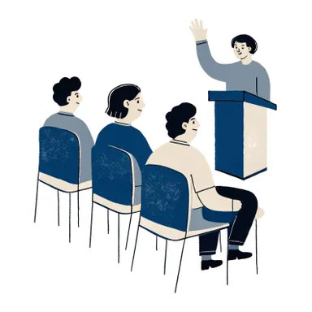
die Versammlung, die Versammlungen 모임, 총회
Die Versammlung beginnt um 19 Uhr.모임은 19시에 시작해요.
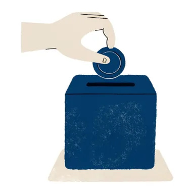
die Spende, die Spenden 기부금, 기부
Der Verein lebt von Spenden.그 모임은 기부금으로 꾸려 가요.
spenden (hat gespendet) 기부하다
Die Firma spendet zwanzig Laptops.회사가 노트북 스무 대를 기부해요.
die Aktion, die Aktionen 활동, 행사
Am Samstag ist die nächste Aktion.토요일에 다음 활동이 있어요.
die Veranstaltung, die Veranstaltungen 행사
Die Veranstaltung ist kostenlos.그 행사는 무료예요.
organisieren (hat organisiert) 준비해 꾸리다
Wer organisiert das Fest?잔치는 누가 준비해요?
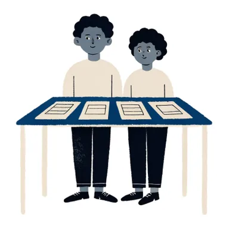
der Stand, die Stände 부스, 가판대
Wir haben einen Stand auf dem Stadtfest.우리는 도시 축제에 부스를 내요.
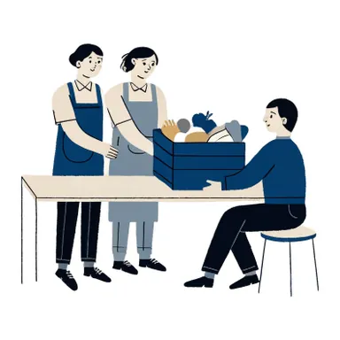
die Tafel, die Tafeln 식료품 나눔터
Die Tafel verteilt Lebensmittel.식료품 나눔터에서는 먹을거리를 나눠 줘요.
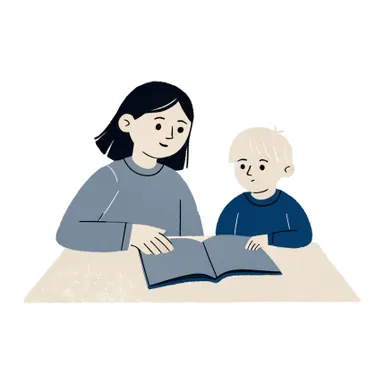
die Nachhilfe 공부를 따로 봐 주는 일
Ich gebe Nachhilfe in Mathematik.저는 수학 공부를 봐 줘요.
betreuen (hat betreut) 돌보다
Sie betreut drei Kinder am Nachmittag.그 사람은 오후에 아이 셋을 돌봐요.
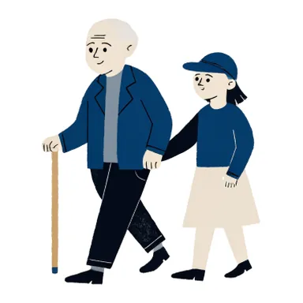
begleiten (hat begleitet) 함께 가 주다
Ich begleite ihn zur Behörde.제가 그 사람과 관청에 같이 가요.
der Helfer, die Helfer 돕는 사람
Für das Fest brauchen wir zehn Helfer.잔치에 도울 사람이 열 명 필요해요.
die Not 곤경, 어려움
Wir helfen Menschen in Not.우리는 어려움에 놓인 사람들을 도와요.
arm 가난한
Auch in reichen Ländern gibt es arme Menschen.잘사는 나라에도 가난한 사람들이 있어요.
obdachlos 집이 없는
Im Winter ist das Leben für obdachlose Menschen hart.겨울은 집 없는 사람들에게 힘들어요.
der Geflüchtete, die Geflüchteten 피난 온 사람
Im Sprachcafé lernen viele Geflüchtete Deutsch.Sprachcafé에서 피난 온 사람들이 독일어를 많이 배워요.
die Integration 사회에 어울려 사는 일
Sprache ist wichtig für die Integration.사회에 어울려 살려면 말이 중요해요.
die Behörde, die Behörden 관청
Der Brief kommt von einer Behörde.그 편지는 관청에서 왔어요.
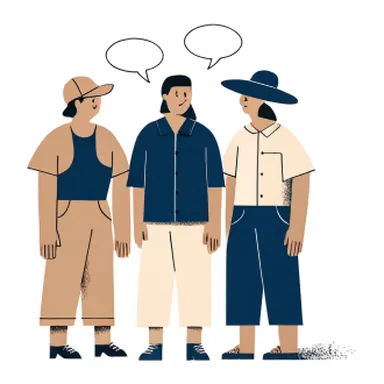
dolmetschen (hat gedolmetscht) 통역하다
Sie dolmetscht für eine koreanische Familie.그 사람은 한국인 가족을 위해 통역해요.
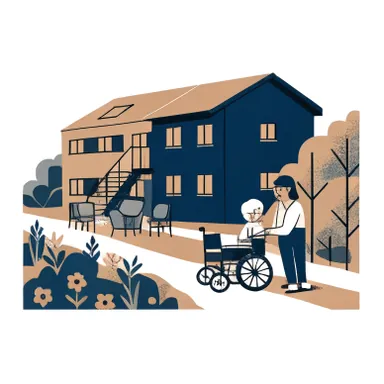
das Seniorenheim, die Seniorenheime 양로원
Jeden Freitag liest er im Seniorenheim vor.그 사람은 금요일마다 양로원에서 책을 읽어 줘요.
der Jugendliche, die Jugendlichen 청소년
Der Jugendtreff ist für Jugendliche ab zwölf Jahren.청소년 쉼터는 열두 살부터 갈 수 있어요.
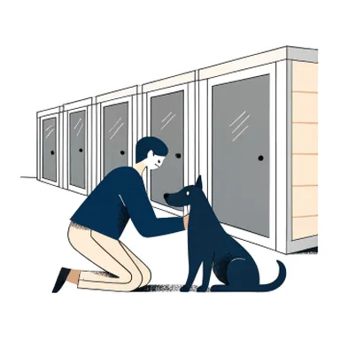
das Tierheim, die Tierheime 동물 보호소
Der Hund kommt aus dem Tierheim.그 개는 동물 보호소에서 왔어요.
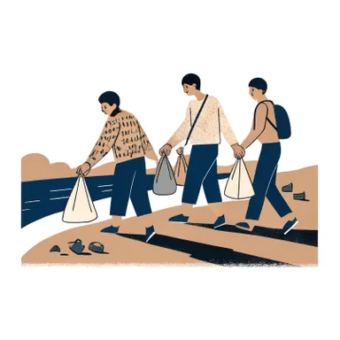
der Naturschutz 자연 보호
Die Gruppe arbeitet für den Naturschutz.그 모임은 자연 보호를 위해 일해요.
renovieren (hat renoviert) 고쳐서 새로 꾸미다
Wir renovieren den Jugendtreff.우리는 청소년 쉼터를 고쳐요.
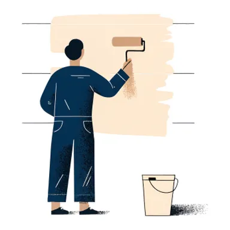
streichen (hat gestrichen) 칠하다
Am Samstag streichen wir die Wände.토요일에 벽을 칠해요.
die Gesellschaft, die Gesellschaften 사회
Das Ehrenamt ist wichtig für die Gesellschaft.봉사 활동은 사회에 중요해요.
der Bürger, die Bürger 시민
Die Bürger können Vorschläge machen.시민들이 제안을 할 수 있어요.
die Politik 정치
Ich interessiere mich für Politik.저는 정치에 관심이 있어요.
die Wahl, die Wahlen 선거, 고르는 일
Am Sonntag ist Wahl.일요일에 선거가 있어요.
wählen (hat gewählt) 뽑다, 투표하다
Der Verein wählt einen neuen Vorstand.모임에서 새 임원진을 뽑아요.
die Partei, die Parteien 정당
Sie ist Mitglied einer Partei.그 사람은 정당의 당원이에요.
die Demokratie, die Demokratien 민주주의
Demokratie braucht Bürger, die mitmachen.민주주의에는 함께하는 시민이 필요해요.
die Demonstration, die Demonstrationen 시위
Am Samstag gibt es eine Demonstration für den Klimaschutz.토요일에 기후 보호 시위가 있어요.
mitbestimmen (hat mitbestimmt) 함께 정하다
Im Verein können alle mitbestimmen.모임에서는 누구나 함께 정할 수 있어요.
der Zusammenhalt 서로 뭉치는 힘
Der Zusammenhalt im Stadtteil ist stark.이 동네는 서로 잘 뭉쳐요.
die Anerkennung 알아주는 일, 인정
Freiwillige brauchen Anerkennung.봉사자에게는 알아주는 마음이 필요해요.
sinnvoll 뜻있는
Ich möchte etwas Sinnvolles tun.뜻있는 일을 하고 싶어요.
beitragen (du trägst bei, hat beigetragen) 보태다
Jeder kann etwas beitragen.누구나 뭔가 보탤 수 있어요.
weitergeben (du gibst weiter, hat weitergegeben) 전해 주다
Ich gebe meine Erfahrung weiter.제 경험을 전해 줘요.
nicht nur … sondern auch ~뿐 아니라 ~도
Er hilft nicht nur am Wochenende, sondern auch abends.그 사람은 주말뿐 아니라 저녁에도 도와요.
zwar … aber ~이기는 하지만
Es ist zwar anstrengend, aber schön.힘들기는 하지만 좋아요.
이 과의 낱말로 여덟 문제를 풀어요.
alles, etwas, nichts, das 뒤에는 was가, 장소 뒤에는 wo가 와요.
앞 조각을 들으면 뒤 조각이 올 것을 알 수 있어요.
규칙
B1.1에서는 명사를 der, die, das로 받아서 설명했어요. der Kollege, der mir hilft. 그런데 앞에 명사가 없고 alles, etwas, nichts, vieles, das 같은 말이 오면 was로 이어요. das Beste, das Erste처럼 '가장 ~한 것'을 뜻하는 말 뒤에도 was를 써요. 동사는 문장 끝으로 가요.
| 앞의 말 | 보기 |
|---|---|
| alles | Alles, was ich weiß, habe ich von dir gelernt. |
| etwas | Das ist etwas, was mir Spaß macht. |
| nichts | Es gibt nichts, was ich lieber tue. |
| das | Jeder macht das, was er kann. |
| das Erste | Es ist das Erste, was ich tun kann. |
주의 앞 문장 전체를 받을 때도 was를 써요. Er hilft jede Woche, was ich toll finde. 여기서 was는 '그 사람이 주마다 돕는다는 것'을 가리켜요.
규칙을 보고 바로 확인해 보세요.
Es gibt nichts, … mich stört. 빈칸에 알맞은 말은 무엇인가요?
규칙
장소를 설명할 때는 wo로 이을 수 있어요. B1.1에서 배운 in dem, in der와 뜻이 같고, 말할 때는 wo가 더 편해요. 도시와 나라 이름 뒤, 그리고 dort, da, überall 뒤에서는 늘 wo를 써요.
| in dem, in der | wo |
|---|---|
| das Haus, in dem ich wohne | das Haus, wo ich wohne |
| die Stadt, in der ich studiere | die Stadt, wo ich studiere |
| Frankfurt, wo ich wohne | |
| dort, wo wir uns treffen |
주의 장소가 아닌 것에는 wo를 쓰지 않아요. 사람은 der Mann, der …, 물건은 das Buch, das …로 이어요. der Mann, wo …라고 말하는 사람도 있지만 표준말이 아니에요.
규칙을 보고 바로 확인해 보세요.
Das ist die Stadt, … ich studiert habe. 빈칸에 알맞은 말은 무엇인가요?
규칙
한 가지에 다른 한 가지를 더할 때 nicht nur … sondern auch를 써요. 2과에서 배운 sowohl … als auch와 뜻이 가깝지만, 뒤에 오는 말에 더 힘이 실려요. sondern 앞에는 늘 쉼표를 찍어요. 낱말과 낱말을 이을 수도 있고 문장과 문장을 이을 수도 있어요.
| 잇는 것 | 보기 |
|---|---|
| 낱말 | nicht nur Geld, sondern auch Zeit |
| 문장 | Er hilft nicht nur am Samstag, sondern er kommt auch abends. |
주의 sondern은 앞에 nicht나 kein이 있을 때만 써요. Ich komme nicht heute, sondern morgen. 앞에 nicht가 없으면 aber를 써요.
규칙을 보고 바로 확인해 보세요.
Er spendet nicht nur Geld, … auch Zeit. 빈칸에 알맞은 말은 무엇인가요?
규칙
한쪽을 먼저 받아들이고 나서 더 중요한 말을 할 때 zwar … aber를 써요. zwar는 '그건 그렇다'는 표시이고, 정말 하고 싶은 말은 aber 뒤에 와요. zwar는 보통 동사 뒤에 오고, aber 앞에는 쉼표를 찍어요. obwohl과 뜻이 가까워요.
| obwohl | zwar … aber |
|---|---|
| Obwohl ich wenig Zeit habe, helfe ich. | Ich habe zwar wenig Zeit, aber ich helfe. |
| Obwohl es anstrengend ist, macht es Spaß. | Es ist zwar anstrengend, aber es macht Spaß. |
주의 남의 말에 반대할 때 이 틀이 부드러워요. Das ist zwar eine gute Idee, aber wir haben kein Geld dafür. 먼저 좋은 점을 받아들이고, 그다음에 내 생각을 말해요.
규칙을 보고 바로 확인해 보세요.
Die Arbeit ist zwar schwer, … sie macht Spaß. 빈칸에 알맞은 말은 무엇인가요?
듣고 알맞은 것을 고르세요.
Jiu는 무슨 말을 하나요?
Das ist genau das, was mir damals gefehlt hat.
Markus는 소방대 일을 어떻게 느끼나요?
Es ist zwar anstrengend, aber es gibt mir viel zurück.
Sprachcafé는 어떤 곳인가요?
Es ist ein Ort, wo man ohne Angst Deutsch sprechen kann.
회사는 무엇을 해 주나요?
Wir bekommen nicht nur den Tag frei, sondern die Firma kauft auch die Farbe.
Lena가 자연 보호 모임 사람들에게 음성 메시지를 남겼어요. 듣고 답하세요.
Die Aktion am Samstag
Lena Hallo zusammen, hier ist Lena. Am Samstag ist unsere nächste Aktion am Mainufer.
Lena Wir treffen uns um zehn Uhr an der Brücke, dort, wo auch der Flohmarkt ist.
Lena Bringt bitte feste Schuhe und etwas zu trinken mit. Alles, was ihr sonst braucht, bekommt ihr von uns.
Lena Wir sammeln zwar nur zwei Stunden, aber beim letzten Mal waren es dreißig Säcke Müll.
Lena Danach gibt es Kaffee und Kuchen. Neue Helfer sind willkommen. Sagt es weiter!
Wo treffen sich die Helfer?
Die Helfer müssen Handschuhe und Säcke selbst mitbringen.
튼튼한 신과 마실 것만 가져오면 되고, 나머지는 모임에서 줘요.
Wie lange dauert die Aktion?
Wie viel Müll wurde beim letzten Mal gesammelt?
Neue Helfer dürfen mitkommen.
인사과의 Frau Schulz가 직원들에게 보낸 메일이에요. 읽고 답하세요.
Unser sozialer Tag am 7. Juli
Liebe Kolleginnen und Kollegen,
am Freitag, dem 7. Juli, findet wieder unser sozialer Tag statt. In diesem Jahr renovieren wir den Jugendtreff in Bockenheim.
Der Jugendtreff ist ein Ort, wo sich jeden Nachmittag ungefähr vierzig Jugendliche treffen. Die Räume sind zwar groß, aber alt.
Wir streichen nicht nur die Wände, sondern bauen auch neue Bänke für den Garten. Alles, was wir brauchen, wird von der Firma bezahlt.
Wir beginnen um 9 Uhr und sind gegen 16 Uhr fertig. Für das Mittagessen ist gesorgt.
Bitte melden Sie sich bis zum 23. Juni bei mir an. Kinder ab zehn Jahren dürfen mitkommen.
Viele Grüße
Anke Schulz
Was wird am sozialen Tag gemacht?
Wie viele Jugendliche kommen jeden Nachmittag in den Jugendtreff?
Die Mitarbeiter müssen die Farbe selbst bezahlen.
필요한 것은 다 회사가 내요.
Bis wann muss man sich anmelden?
Kinder ab zehn Jahren dürfen mitkommen.
was와 wo 가운데 알맞은 것을 고르세요.
Das ist alles, ich weiß.
제가 아는 건 그게 다예요.
Das ist der Ort, wir uns treffen.
우리가 만나는 곳이에요.
Ich suche etwas, sinnvoll ist.
뜻있는 일을 찾고 있어요.
Leipzig ist die Stadt, Lena studieren möchte.
라이프치히는 Lena가 공부하고 싶어 하는 도시예요.
Es gibt nichts, ich lieber tue.
제가 이보다 더 즐겨 하는 일은 없어요.
Wir treffen uns dort, der Flohmarkt ist.
벼룩시장이 열리는 그곳에서 만나요.
명사를 받는지, alles나 etwas를 받는지 보고 고르세요.
Das ist das Formular, ich nicht verstehe.
제가 이해하지 못하는 서류예요.
앞에 명사 das Formular가 있으면 das로 이어요.
Das ist etwas, ich nicht verstehe.
제가 이해하지 못하는 거예요.
etwas 뒤에는 was예요.
Der Verein, den Jugendtreff leitet, sucht Helfer.
청소년 쉼터를 맡은 모임이 도울 사람을 찾아요.
Das Beste, ich in Frankfurt gefunden habe, sind meine Freunde.
제가 프랑크푸르트에서 얻은 가장 좋은 것은 친구들이에요.
Die Kollegin, alles organisiert, heißt Frau Schulz.
모든 것을 준비하는 동료는 Frau Schulz예요.
두 조각으로 된 말을 완성하세요.
Er spendet nicht nur Geld, auch Zeit.
그 사람은 돈뿐 아니라 시간도 내요.
Die Arbeit ist schwer, aber sie macht Spaß.
일은 힘들기는 하지만 재미있어요.
Ich habe zwar wenig Zeit, ich komme.
시간은 별로 없지만 갈게요.
Sie hilft am Samstag, sondern auch am Sonntag.
그 사람은 토요일뿐 아니라 일요일에도 도와요.
Das ist zwar eine gute Idee, wir haben kein Geld dafür.
좋은 생각이기는 하지만 그럴 돈이 없어요.
Wir streichen nicht nur die Wände, sondern bauen neue Bänke.
벽을 칠할 뿐 아니라 새 벤치도 만들어요.
낱말을 순서대로 눌러 문장을 만드세요.
제가 아는 것을 모두 전해 줘요.
우리가 만나는 곳이에요.
힘들기는 하지만 좋아요.
그 사람은 돈뿐 아니라 시간도 내요.
저마다 할 수 있는 일을 해요.
낱말과 설명을 짝지으세요.
빈칸에 알맞은 낱말을 쓰세요.
Sie arbeitet im Tierheim.
그 사람은 동물 보호소에서 봉사로 일해요.
Der Verein lebt von .
그 모임은 기부금으로 꾸려 가요.
Am Samstag wir die Wände.
토요일에 벽을 칠해요.
Ich möchte etwas tun.
뜻있는 일을 하고 싶어요.
듣고 그대로 써 보세요.
음성 준비 중Alles, was ich gelernt habe, gebe ich weiter. 제가 배운 것을 모두 전해 줘요.
음성 준비 중Es ist zwar anstrengend, aber schön. 힘들기는 하지만 좋아요.
음성 준비 중Das Sprachcafé ist mein Ehrenamt. Sprachcafé가 제 봉사 활동이에요.
Ich engagiere mich seit einem Jahr im Sprachcafé. 저는 1년 전부터 Sprachcafé에서 활동해요.
Einmal im Monat sammeln wir Müll am Fluss. 한 달에 한 번 강가에서 쓰레기를 주워요.
Das ist etwas, was mir viel Spaß macht. 그건 제가 아주 즐겁게 하는 일이에요.
Ich habe dabei viele Leute kennengelernt. 그러면서 사람을 많이 알게 됐어요.
Unsere Gruppe wurde vor fünf Jahren gegründet. 우리 모임은 5년 전에 만들어졌어요.
Wir sind ein Ort, wo sich Studierende aus vielen Ländern treffen. 우리는 여러 나라에서 온 학생들이 만나는 곳이에요.
Wir treffen uns jeden Donnerstag um 18 Uhr. 우리는 목요일마다 18시에 만나요.
Alles, was wir brauchen, bezahlen wir aus Spenden. 필요한 건 다 기부금으로 사요.
Wir suchen neue Mitglieder. 새 회원을 찾고 있어요.
Komm doch einfach vorbei! 그냥 한번 들러요!
Man braucht keine Erfahrung. 경험이 없어도 돼요.
Jeder macht das, was er kann. 저마다 할 수 있는 일을 해요.
Man hilft nicht nur anderen, sondern lernt auch selbst viel. 남을 도울 뿐 아니라 스스로도 많이 배워요.
Es ist zwar anstrengend, aber es lohnt sich. 힘들기는 하지만 그만한 값어치가 있어요.
Man lernt Leute kennen, die man sonst nie treffen würde. 다른 데서는 절대 못 만날 사람들을 알게 돼요.
Es ist ein gutes Gefühl, etwas Sinnvolles zu tun. 뜻있는 일을 하면 기분이 좋아요.
Ich möchte mich für den sozialen Tag anmelden. 봉사의 날에 신청하고 싶습니다.
Ich würde gern beim Streichen helfen. 칠하는 일을 돕고 싶습니다.
Darf ich mein Kind mitbringen? 아이를 데려가도 될까요?
Was soll ich mitbringen? 무엇을 가져가야 하나요?
과제 고르기
역할 대화와 말하기, 쓰기 과제는 대학 생활과 직장 생활 두 가지예요. 하나를 고르면 다음 과에서도 그쪽 과제가 나와요. 언제든 바꿀 수 있어요.
대화 A에서 역할을 하나 고르세요. 상대의 말은 글로 읽고, 내 차례에는 직접 말해요.
대화 B에서 역할을 하나 고르세요. 상대의 말은 글로 읽고, 내 차례에는 직접 말해요.
내가 하고 싶은 봉사를 떠올리고 칸을 채우세요. 완성된 문장을 소리 내어 읽어 보세요.
Ich würde mich gern im Tierheim engagieren.
Etwas, was ich gut kann, ist fotografieren.
Ich habe zwar wenig Zeit, aber zwei Stunden pro Woche schaffe ich.
Ich möchte helfen, weil ich etwas Sinnvolles tun möchte.
나는 대학의 「International Café」 회원이에요. 여러 나라에서 온 학생들이 목요일마다 18시에 학생 식당 옆방에서 만나요. 함께 요리하고, 말을 맞바꿔 배우고, 한 달에 한 번 나들이를 가요. 회비는 없어요.
새 학기 안내 행사에서 부스를 지켜요. 새로 온 학생이 다가와서 물어요. 모임을 소개하고 한번 오라고 권하려고 해요.
새로 온 학생이 부스에 와서 물어요. 쪽지를 보고 답하세요. 질문을 듣고 소리 내어 답한 뒤 예시 답과 비교해 보세요.
Hallo! Was ist das International Café? 안녕하세요! International Café가 뭐예요?
Das ist ein Ort, wo sich Studierende aus vielen Ländern treffen.
Und was macht ihr da? 거기서 뭘 해요?
Wir kochen zusammen und üben Sprachen. Einmal im Monat machen wir einen Ausflug.
Wann trefft ihr euch? 언제 만나요?
Jeden Donnerstag um achtzehn Uhr, im Raum neben der Mensa.
Ich bin erst seit zwei Wochen hier und spreche nicht gut Deutsch. 저는 여기 온 지 2주밖에 안 됐고 독일어를 잘 못해요.
Das macht nichts. Bei uns lernt man nicht nur Deutsch, sondern findet auch Freunde.
Kostet das etwas? 돈이 들어요?
Nein. Alles, was wir brauchen, bezahlen wir aus Spenden. Komm doch einfach am Donnerstag vorbei!
Unsere Gruppe sucht Mitglieder
내가 속한 학생 단체를 소개하고 새 회원을 모으는 글을 써 보세요. 일곱 문장쯤 써요.
Liebe Studierende, das International Café ist ein Ort, wo sich Studierende aus vielen Ländern treffen. Wir kochen zusammen, üben Sprachen und machen einmal im Monat einen Ausflug. Wir treffen uns jeden Donnerstag um 18 Uhr im Raum neben der Mensa. Bei uns lernt man nicht nur Deutsch, sondern findet auch Freunde. Das Studium ist zwar anstrengend, aber zwei Stunden pro Woche hat jeder. Alles, was wir brauchen, bezahlen wir aus Spenden. Die Teilnahme kostet nichts. Kommt doch einfach vorbei! Viele Grüße, Minji Choi
다 쓴 뒤에 확인해 보세요.
우리 회사는 9월 15일 금요일에 봉사의 날을 해요. 올해는 양로원의 마당을 새로 꾸며요. 9시부터 15시까지 일하고, 필요한 것은 회사가 내요. 신청은 9월 1일까지 인사과에 해요.
나는 참가하고 싶어요. 마당 일을 해 본 적은 없지만 사진을 잘 찍어요. 그날의 모습을 사진으로 남기겠다고 하려고 해요. 열두 살 딸을 데려가도 되는지도 물으려고 해요.
인사과 직원이 물어요. 쪽지를 보고 답하세요. 질문을 듣고 소리 내어 답한 뒤 예시 답과 비교해 보세요.
Personalabteilung, guten Tag. Was kann ich für Sie tun? 인사과입니다, 안녕하세요. 무엇을 도와드릴까요?
Guten Tag. Ich möchte mich für den sozialen Tag am fünfzehnten September anmelden.
Sehr schön. Haben Sie Erfahrung mit Gartenarbeit? 잘됐네요. 마당 일을 해 보신 적이 있나요?
Ich habe zwar noch nie im Garten gearbeitet, aber ich kann es lernen.
Gibt es etwas, was Sie besonders gut können? 특히 잘하시는 일이 있나요?
Ja, ich fotografiere gern. Ich könnte nicht nur im Garten helfen, sondern auch Fotos vom Tag machen.
Das ist eine gute Idee. Haben Sie noch Fragen? 좋은 생각이네요. 더 물어보실 게 있나요?
Ja. Darf ich meine Tochter mitbringen? Sie ist zwölf Jahre alt.
Natürlich. Wir treffen uns um neun Uhr vor dem Seniorenheim. 그럼요. 9시에 양로원 앞에서 만나요.
Vielen Dank. Dann bis zum fünfzehnten September!
Meine Anmeldung zum sozialen Tag
회사의 봉사의 날에 참가하겠다고 인사과에 메일을 써 보세요. 일곱 문장쯤 써요.
Sehr geehrte Frau Schulz, ich möchte mich für den sozialen Tag am 15. September anmelden. Ich habe zwar noch nie im Garten gearbeitet, aber ich kann es lernen. Etwas, was ich gut kann, ist Fotografieren. Ich könnte also nicht nur im Garten helfen, sondern auch Fotos vom Tag machen. Ich finde es gut, dass unsere Firma etwas für den Stadtteil tut. Darf ich meine Tochter mitbringen? Sie ist zwölf Jahre alt und würde gern helfen. Ich freue mich auf den Tag. Mit freundlichen Grüßen, Minji Choi
다 쓴 뒤에 확인해 보세요.
Ich kann erzählen, wo und wie ich mich engagiere.어디서 어떻게 봉사하는지 이야기할 수 있어요.
Ich kann eine Gruppe oder einen Verein vorstellen.모임이나 단체를 소개할 수 있어요.
Ich kann andere zum Mitmachen einladen.다른 사람에게 함께하자고 권할 수 있어요.
Ich kann mit was und wo etwas genauer erklären.was와 wo로 더 자세히 설명할 수 있어요.